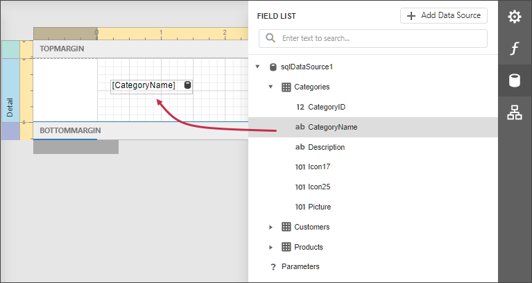

Data Binding Modes
The Report Designer uses one of the following modes to provide dynamic content to your reports: expression bindings or standard data bindings.
Expression Bindings
Expression bindings enable you to use complex expressions that include two or more fields and various functions. Expressions also allow you to calculate complex summaries without scripts and conditionally shape your data without formatting rules.
This mode is enabled in the Report Designer if it provides the Expressions  panel.
panel.

Data Bindings
Standard data bindings enable you to assign a single data field to a report control or use report scripts to provide custom logic.
This mode is enabled in the Report Designer if it does not provide the Expressions  panel.
panel.

Conversion Dialog
The following dialog appears only when expression bindings are enabled in the Report Designer, and you open an existing report that uses standard data bindings:

This dialog prompts you to convert your report to use expressions (the new binding mechanism). Click Yes to run the report conversion, click No to open the report without changes.
See the section below for information on how to use expressions instead of data bindings.
Binding Mode Comparison
Bind to a Single Data Field
The Field List panel allows you to drop fields onto the design surface or existing report controls. All binding ways are identical in the data bindings and expression bindings modes.

You can select a report control and bind it to data in the Properties panel.
Expression Bindings
Data Bindings
Switch to the Expressions panel, click the Text property's ellipsis button and specify the expression.

Expand the Data Bindings drop-down list and select a data field.

See the following topics for more information:
Bind to Multiple Data Fields
Expression Bindings | Data Bindings |
|---|---|
Use the mail merge functionality.
Switch to the Expressions panel, click the Text property's ellipsis button and specify the expression.
| Use the mail merge functionality.
|


Calculate Summary
Expression Bindings | Data Bindings |
|---|---|
Select the summary function in the Expression Editor's Summary section. All functions have the 'sum' prefix.
See Calculate a Summary for more information. | Expand the Summary node in the Actions category and select the summary function in the Function drop-down list.
See Calculate a Summary for more information. |


Complex Bindings, Custom Summary
Expression Bindings | Data Bindings |
|---|---|
Use the Expression Editor to construct an expression of any complexity.
Refer to Calculate an Advanced Summary for an example. | Use report scripts. Refer to Calculate a Custom Summary for an example. |

Conditionally Customize Appearance
Expression Bindings | Data Bindings |
|---|---|
Switch to the Expressions panel, click the Style Name property's ellipsis button and specify the expression.
Refer to Conditionally Change a Control Appearance for an example. | Create formatting rules and assign them to report controls.
Refer to Conditionally Change a Control Appearance for an example. |